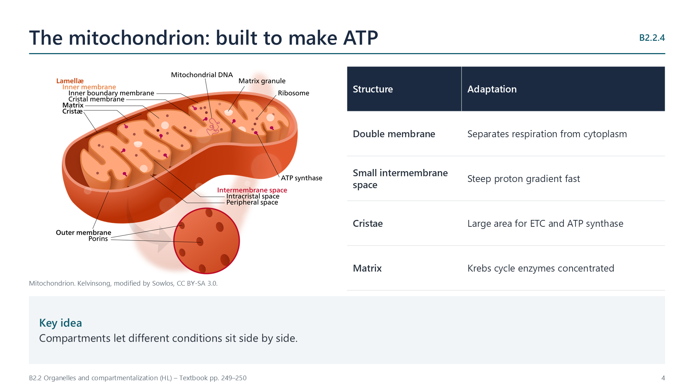

The mitochondrion
pp. 249–250
A double membrane separates aerobic respiration from the cytoplasm. The inner membrane is folded into cristae, giving a large surface area for electron transport chains and ATP synthase. Protons are pumped into the small intermembrane space, so a steep gradient builds quickly. The matrix holds the Krebs cycle enzymes and substrates together at a suitable pH.